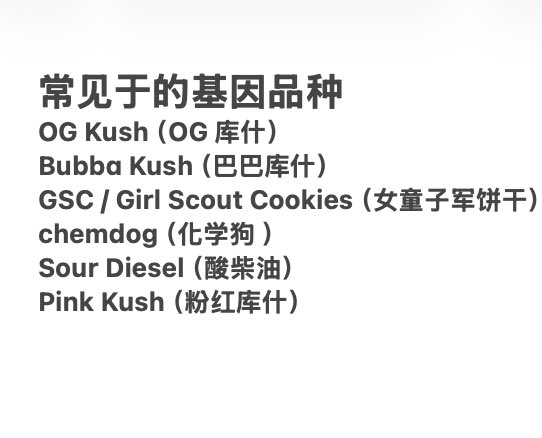

時璃風医詩🌈🏳️🌈
@hagishigure
不錯。我半年前提出過β-石竹烯，gamma-戊內酯，芹菜素，乙酸芳樟酯，2-Methyl-3-buten-2-ol，羅勒烯製作香薰用於純植物源緩解廣場譜系焦慮患者的日常生活壓力的課題來著。

邦尼兔weed_420（大麻/電子煙）
@420420420CTL
如果你买到的大麻闻起来有胡椒气味，辛辣、有时像香料、丁香，微刺鼻，它是一定是一款带有β-石竹烯的大麻
β-石竹烯是唯一已知能直接作用于 CB2 受体的萜烯
（CB2 和炎症、疼痛、身体放松有关）
使用这种大麻常见体验更倾向：
1.身体放松
2.消炎、镇痛感更明显
3.不一定high，不会有强烈“浮空感” https://t.co/G1U3Wrtn0P